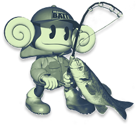
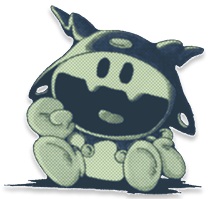

<!DOCTYPE html>
<html lang="en">
    <head>
        <meta charset="UTF-8" />
        <meta name="viewport" content="width=device-width, initial-scale=1.0" />
        <title>scph1001</title>

        <link rel="stylesheet" href="./style/style.css" />
        <link rel="stylesheet" href="./style/home.css" />
        <link rel="icon" type="image/x-icon" href="./assets/jackfrost.png">
        
        <script type="module" src="./script/components.js" defer></script>
        <script type="module" src="./script/script.js" defer></script>
        <script type="module" src="./script/homePage.js" defer></script>
    </head>

    <body id="home-page">
        <left-sidebar></left-sidebar>

        <main id="article-container">
            <!-- <h1>POSTS</h1> -->

            <div id="article-list"> <!-- posts added here through javascript --> </div>
        </main>

        <aside class="sidebar-stack">
            
            <div id="top-container">
                <div class="toggle-button toggle-horizontal box-shadow">
                    <button id="grid-option" class="view-toggle"><div class="button-text">Grid</div></button>
                    <button id="list-option" class="view-toggle"><div class="button-text">List</div></button>
                </div>

                <!-- <a href="/" class="single-button single-button-wide box-shadow">
                    <div class="color-strip"></div>
                    <div class="button-text">Search</div>
                </a> -->
            </div>
            <div id="bottom-container">
                
                <a href="./html/beloveds.html"></a>
            </div>
        </aside>

    </body>
</html>